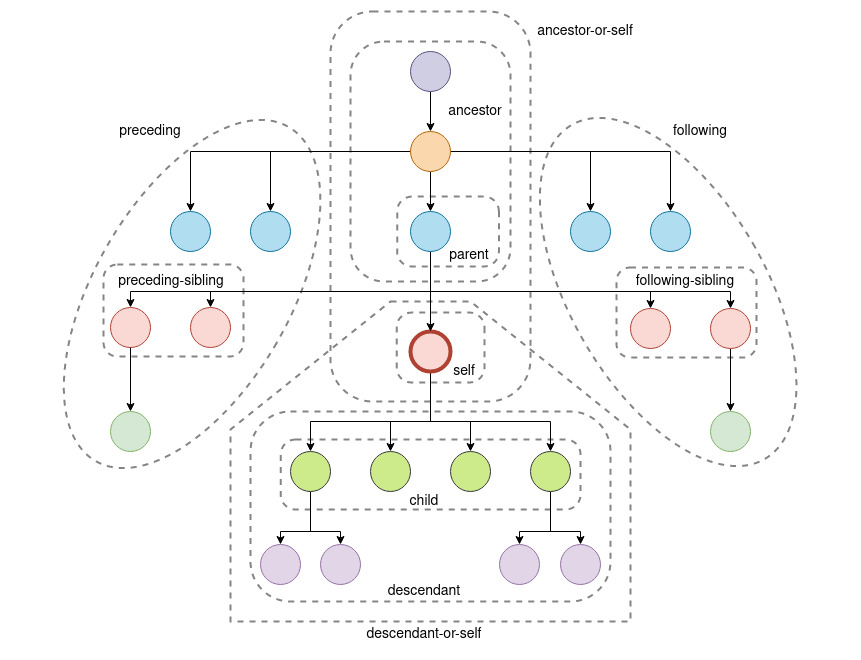
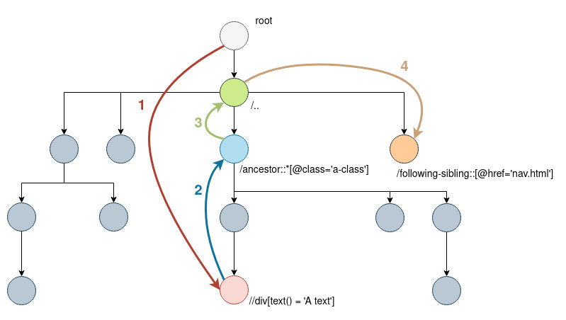

XPath axes¶
XPath lets you search for elements along its different axes.If you are currently positionned as self, the other nodes are relatively located from you on the axes as below.
XPath natively lets you build complex queries chaining them along its different axes. You can navigate like in the example below.
//div[text() = 'A text']/ancestor::*[@class='a-class']/../following-sibling::[@href='nav.html']
|-------descendant------|---------ancestor----------|parent|--------following-sibling---------|
The following xpath query will select an HTML/XML element like bellow.
Axes explanation¶
Below a description made by umbraco of the different xpath axes.
Self Axis¶
While it is rarely used, the self axis returns the node in reference.
/self::*[@class = 'foobar']
Child Axis¶
We mentioned the child axis earlier, and used its shortcut right off. The child axis select the nodes immediately below the node in reference. While the verbose method is rarely used, it is here for reference.
/child::*[@class = 'foobar']
/*[@class = 'foobar']
Parent Axis¶
The parent axis allows us to see the node immediately above the node in reference.
/parent::*[@class = 'foobar']
/..
Descendant Axis¶
Next we have descendant. The descendant axis retrieves all nodes below the node in reference no matter the depth.
/descendant::*[@class = 'foobar']
//*[@class = 'foobar']
Descendant-or-self Axis¶
The descendant-or-self axis returns all nodes below the current node, but also returns the node in reference to the command.
/descendant-or-self::*[@class = 'foobar']
Ancestor Axis¶
The ancestor axis selects all nodes that are ancestors, or the parent, and the parent’s parent, and so on, to the node in reference.
/ancestor::*[@class = 'foobar']
Ancestor-or-self Axis¶
The ancestor-or-self axis selects all nodes that are ancestors, or the parent, and the parent’s parent, and so on, including the node in reference.
/ancestor-or-self::*[@class = 'foobar']
Preceding Axis¶
The preceding axis selects all nodes no matter the depth, that are located on parent-level and who are also located before (preceding) its parent of the node in reference.
/preceding::*[@class = 'foobar']
Preceding-sibling Axis¶
The preceding axis selects all nodes that are located on the same level who are also located before (preceding) the node in reference.
/preceding-sibling::*[@class = 'foobar']
Following Axis¶
The preceding axis selects all nodes no matter the depth, that are located on parent-level and who are also located after (following) its parent of the node in reference.
/following::*[@class = 'foobar']
Following-sibling Axis¶
The preceding axis selects all nodes that are located on the same level who are located after (following) the node in reference.
/following-sibling::*[@class = 'foobar']